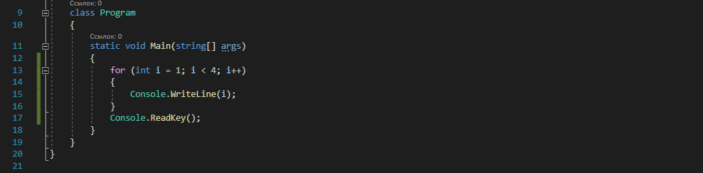

Для хранения данных в программе применяются переменные. Переменная представляет именнованную область памяти, в которой хранится значение определенного типа.
Массив представляет набор однотипных данных. Объявление массива похоже на объявление переменной за тем исключением, что после указания типа ставятся квадратные скобки: Здесь вначале мы объявили массив nums, который будет хранить данные типа int. Далее используя операцию new, мы выделили память для 4 элементов массива: new int[4]. Число 4 еще называется длиной массива. При таком определении все элементы получают значение по умолчанию, которое предусмотренно для их типа. Для типа int значение по умолчанию - 0.
Условные конструкции - один из базовых компонентов многих языков программирования, которые направляют работу программы по одному из путей в зависимости от определенных условий. Одной из таких конструкций в языке программирования C# является конструкция if..else Конструкция if/else проверяет истинность некоторого условия и в зависимости от результатов проверки выполняет определенный код. Но что, если мы захотим, чтобы при несоблюдении условия также выполнялись какие-либо действия? В этом случае мы можем добавить блок else:
Объявление цикла for состоит из трех частей. Первая часть объявления цикла - некоторые действия, которые выполняются один раз до выполнения цикла. Обычно здесь определяются переменные, которые будут использоваться в цикле. Вторая часть - условие, при котором будет выполняться цикл. Пока условие равно true, будет выполняться цикл. И третья часть - некоторые действия, которые выполняются после завершения блока цикла. Эти действия выполняются каждый раз при завершении блока цикла. После объявления цикла в фигурных скобках помещаются сами действия цикла. Рассмотрим стандартный цикл for:  Здесь первая часть объявления цикла - int i = 1 - создает и инициализирует переменную i. Вторая часть - условие i < 4. То есть пока переменная i меньше 4, будет выполняться цикл. И третья часть - действия, выполняемые после завершения действий из блока цикла - увеличение переменной i на единицу.
Цикл foreach предназначен для перебора набора или коллекции элементов. После оператора foreach в скобках сначала идет определение переменной. Затем ключевое слово in и далее коллекция, элементы которой надо перебрать. При выполнении цикл последовательно перебирает элементы коллекции и помещает их в переменную, и таким образом в блоке цикла мы можем выполнить с ними некоторые действия. Например, возьмем строку. Строка по сути - это коллекция символов. И .NET позволяет перебрать все элементы строки - ее символы с помощью цикла foreach.
В цикле do сначала выполняется код цикла, а потом происходит проверка условия в инструкции while. И пока это условие истинно, цикл повторяется. Здесь код цикла сработает 6 раз, пока i не станет равным нулю. Но важно отметить, что цикл do гарантирует хотя бы единократное выполнение действий, даже если условие в инструкции while не будет истинно. То есть мы можем написать: Хотя у нас переменная i меньше 0, цикл все равно один раз выполнится.
В отличие от цикла do цикл while сразу проверяет истинность некоторого условия, и если условие истинно, то код цикла выполняется:
Конструкция switch/case оценивает некоторое выражение и сравнивает его значение с набором значений. И при совпадении значений выполняет определенный код.: После ключевого слова switch в скобках идет сравниваемое выражение. Значение этого выражения последовательно сравнивается со значениями, помещенными после оператора сase. И если совпадение будет найдено, то будет выполняться определенный блок сase. В конце каждого блока сase должен ставиться один из операторов перехода: break, goto case, return или throw. Как правило, используется оператор break. При его применении другие блоки case выполняться не будут.
Если мы хотим вывести некоторую информацию на консоль, то нам надо передать ее в метод Console.WriteLine: